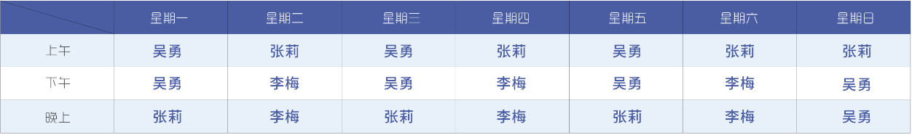

预防接种
科室介绍
我院儿童保健科成立于1996年,成立孕今已有24年历史。
现有医务人员13人,其中副主任医师3名,主治医师7名,早期综合发展训练师1名,护士2名。
拥有多功能儿童保健测|评系统,心理测试软件,营养分析软件,德国进口听性脑干反应测试仪,美国进口的伟伦视力筛查仪,骨密度检查仪,经皮测胆红素仪,儿童智能身高体重检查仪等。
开设有生长发育、智力发育监测,营养膳食分析,心理卫生专业,儿童智力测试,儿童早期发展综合训练,眼你健,听力保健及小儿中医穴位推拿按摩专业，对小儿营养不良，贫血,佝偻病,肥胖症和矮身材等疾病有丰富的临床诊治经验。在眉山地区率先开展了小儿中医穴位推拿按摩,佝偻病维生素D检测,地中海贫血基天检测，微量元素检测,过敏原检测,托幼机构入学体检,矮身材的诊治。
科室医生
吴勇
预防接种
我院儿童保健科成立于1996年，成立至今已有24年历史。
现有医务人员13人，其中副主任医师3名，主治医师7名，早期综合发展训练师1名，护士2名。
拥有多功能儿童保健评测系统，心理测试软件，营养分析软件，德国进口听性脑干反应测试仪，美国进口的伟伦视力筛查仪，骨密度检测仪。

张莉
预防接种
我院儿童保健科成立于1996年，成立至今已有24年历史。
现有医务人员13人，其中副主任医师3名，主治医师7名，早期综合发展训练师1名，护士2名。
拥有多功能儿童保健评测系统，心理测试软件，营养分析软件，德国进口听性脑干反应测试仪，美国进口的伟伦视力筛查仪，骨密度检测仪。

李梅
预防接种
我院儿童保健科成立于1996年，成立至今已有24年历史。
现有医务人员13人，其中副主任医师3名，主治医师7名，早期综合发展训练师1名，护士2名。
拥有多功能儿童保健评测系统，心理测试软件，营养分析软件，德国进口听性脑干反应测试仪，美国进口的伟伦视力筛查仪，骨密度检测仪。
出诊安排
